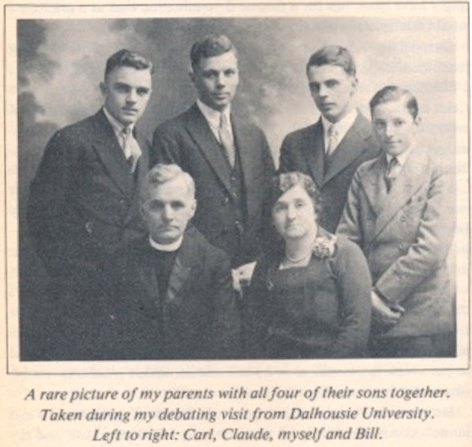

-1-MasterItem.svg)
Stories of Westminster United Church & its People / Page
101
automobile.” He had also never experienced a flush toilet! That loud sound of rushing water
when
he pulled the chain. “The deluge that came down would almost outdo Niagara. The first time
I performed the operation I thought that I had burst a water main.”
While at the college he considered what he might want as his next
step in life: lawyer, teacher? As a lawyer he might become the
Premier of NFLD or even the Prime Minister of Canada. Nfld had
just taken Canada into confederation. (Most Canadians probably
thought that we had taken NFLD into confederation. Newfies saw it
the other way round.) That next step however would require money
he didn’t yet have.
At the end of his year at college Ernest returned home. By this time
his parents were living in Grand Banks, NFLD. Grand Backs was a
centre for shipping fish and other cargo to Spain and the Caribbean.
During the summer following his return he worked at jobs in the
harbour including filling ships with foul smelling fish — what his
fellow workers called “lungering up.” The money was good (75¢ an hour) and he was on his way to
establishing his university fund.
However, at the end of summer Ernest decided to further his fund through
teaching.
He was 17 years old.
He applied to the Methodist Superintendent of Schools to get a teaching position
in Labrador.
None was available but a call came for a senior master (upper grades) at La
Scie, an outport on the
Northern coast of the island, for which he would earn $1000 for the 10 month
school year. He took
the job. As Master of the Upper Grades he became a person of consequence in the
small town.
He also made friends with the Methodist minister who was, of course, his ‘employer.’
The minister, Max Parsons, was himself only a Probationer ( a
minister-in-training).
Rev. Ernest Marshall Howse
